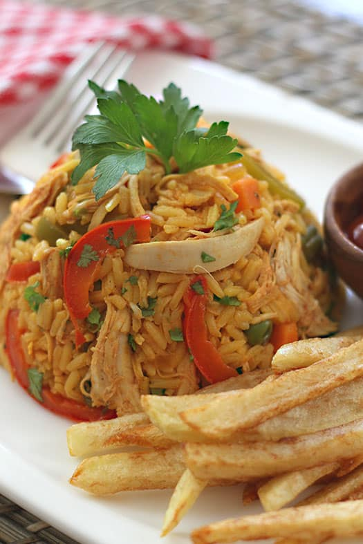
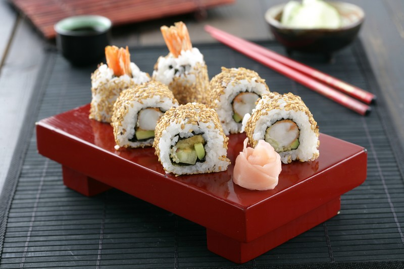
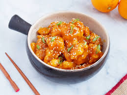

Platos Principales
Aquí te presentamos algunos de los platos estrella que podrás disfrutar en nuestro festival. Cada uno cuenta una historia, desde las especias de Asia hasta los sabores vibrantes de América Latina.

Pasta Boloñesa (ciudad de Bolonia)
Ingredientes: Carne molida de res, cebolla, apio, zanahoria, vino tinto, puré de tomate, caldo de carne, leche entera, sal, pimienta, aceite de oliva, pasta (tagliatelle o espagueti)
Descripción: Un plato clásico de la cocina italiana. Consiste en una deliciosa salsa de carne (ragú) a fuego lento, hecha con carne de res o de ternera, tomate, zanahoria, apio, cebolla y un toque de vino. La salsa se sirve sobre un tipo de pasta, tradicionalmente tagliatelle, aunque es común verla con espagueti.
Dato curioso: En España existe una versión muy parecida llamada "Paella de Pollo".

Arroz con Pollo (Latinoamérica)
Ingredientes: Arroz, pollo, azafrán o cúrcuma, arvejas, zanahorias, pimientos.
Descripción: Un plato casero y reconfortante, muy popular en países como Colombia y Perú. Su color amarillo se debe a las especias, y su sabor es suave pero lleno de aroma.
Dato curioso: En España existe una versión muy parecida llamada "Paella de Pollo".

Ajiaco(Bogotá, Colombia.)
Ingredientes: Pollo, papa criolla, papa pastusa, papa sabanera, guascas, cilantro, mazorcas de maíz, crema de leche, alcaparras, aguacate
Descripción: Una sopa espesa y emblemática de la capital colombiana, hecha con diferentes tipos de papas.
Dato curioso: a clave del ajiaco es el uso de las tres variedades de papa. La papa criolla se deshace al cocinarse, espesando la sopa de forma natural, mientras que las otras dos variedades se mantienen firmes, aportando diferentes texturas.

Sushi ( Japón)
Ingredientes: Arroz de sushi, vinagre de arroz, azúcar, sal, pescado crudo (salmón, atún), camarones, surimi, pepino, aguacate, alga nori, salsa de soja, wasabi, jengibre encurtido.
Descripción: Un plato de origen japonés hecho de arroz avinagrado combinado con otros ingredientes. Aunque la palabra "sushi" a menudo se asocia con pescado crudo, el ingrediente principal es el arroz. Puede llevar pescado crudo (sashimi), mariscos, vegetales o huevo, y se presenta en diversas formas, como rollos (maki), bolas de arroz (nigiri) o conos (temaki)
Dato curioso: Arroz de sushi, vinagre de arroz, azúcar, sal, pescado crudo (salmón, atún), camarones, surimi, pepino, aguacate, alga nori, salsa de soja, wasabi, jengibre encurtido.

Pollo a la Naranja ( Aunque está inspirado en la cocina china, su versión popular se originó en la cocina chino-estadounidense)
Ingredientes: Pechuga de pollo, huevo, maicena, harina, jugo de naranja, ralladura de naranja, vinagre de arroz, salsa de soja, jengibre, ajo, azúcar, aceite vegetal, semillas de sésamo.
Descripción: Un plato popular de la cocina chino-estadounidense. Consiste en trozos de pollo fritos y crujientes, bañados en una salsa agridulce y cítrica hecha con jugo de naranja, salsa de soja, jengibre y ajo. Se suele servir con arroz blanco o frito y brócoli al vapor
Dato curioso: A diferencia de lo que muchos piensan, el pollo a la naranja no es un plato tradicional de China continental. Fue creado en los Estados Unidos para adaptarse al gusto local, al igual que otros platos como el General Tso's Chicken